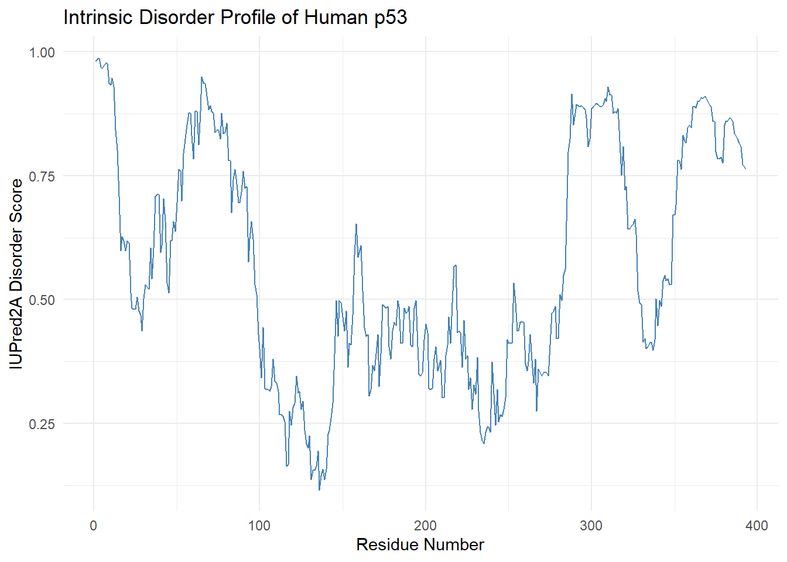
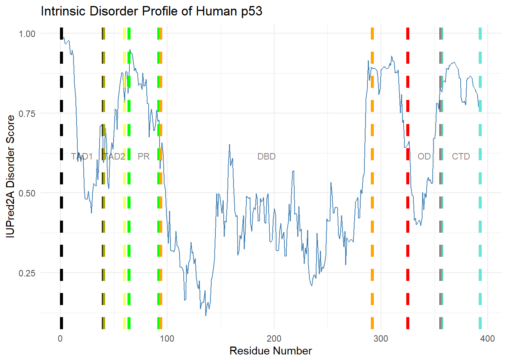
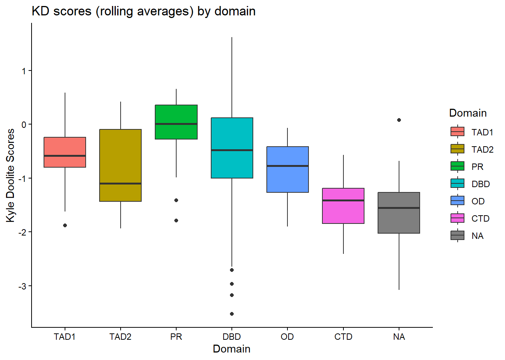

library(tidyverse)
library(Biostrings)Sequence and Disorder Features Underlying Functional Domains of p53
Setting up the analysis environment
Before starting our analysis, we need to properly configure our work environment. For this project, we’ll be using R, in particular the tidyverse and Biostrings packages.
With our libraries now loaded in we can load in the fasta file for p53 in humans. For this project the file was taken from Uniprot (P04637)
p53_seq <- readAAStringSet("C:/Users/USER/Desktop/P53_protein_proj/data/P53_human.fasta")Before proceeding it might be a good idea to convert our data into a table
seq_str <- as.character(p53_seq[[1]])
aa_vec <- unlist(strsplit(seq_str, ""))
p53_table <- data.frame(
RESID = seq_along(aa_vec),
AminoAcid = aa_vec
)Before proceeding we should a quick sanity check on the contents
summary(p53_table) RESID AminoAcid
Min. : 1 Length:393
1st Qu.: 99 Class :character
Median :197 Mode :character
Mean :197
3rd Qu.:295
Max. :393 head(p53_table) RESID AminoAcid
1 1 M
2 2 E
3 3 E
4 4 P
5 5 Q
6 6 Stail(p53_table) RESID AminoAcid
388 388 E
389 389 G
390 390 P
391 391 D
392 392 S
393 393 DWe first examine the intrinsic disorder scores, which quantify the likelihood that a given amino acid residue resides within an intrinsically disordered region (IDR). For this project, disorder scores are interpreted according to the following convention, adapted from the referenced source: here
Scores < 0.5: The residue is generally ordered.
Scores > 0.5: The residue is generally considered disordered (unstructured or flexible).
Scores between 0.25 and 0.5: These residues are often considered flexible or moderately disordered
We can get our scores using the IUPred2A site, and we will be only utilizing the IUPred2 values
library(jsonlite)Warning: package 'jsonlite' was built under R version 4.5.2
Attaching package: 'jsonlite'The following object is masked from 'package:purrr':
flattendis_scores <- fromJSON("C:/Users/USER/Desktop/P53_protein_proj/data/p53_iupred2a.json")
p53_table$Disorder_Scores <-dis_scores$iupred2
names(p53_table)[1] "RESID" "AminoAcid" "Disorder_Scores"Now that the scores are added into the table, it might be a good idea to get a quick visualization of the overall values of our disorder scores through ggplot
ggplot(p53_table, aes(x = RESID, y = Disorder_Scores)) +
geom_line(color = "steelblue") +
labs(
title = "Intrinsic Disorder Profile of Human p53",
x = "Residue Number",
y = "IUPred2A Disorder Score"
) +
theme_minimal()
This profile of disorder scores aligns with what we should expect from p53 protein. Both the C and N termini display consistently high scores, which is to be expected as both regions require a high degree of flexibility to carry out interactions with multiple binding partners.
Mapping out the Individual Domains per Residue
With our disorder scores calculated, we should now organize them into distinct domains. For this project, I utilized the domain models as shown in this article here
p53_table$Domain <- 0
for (i in 1:nrow(p53_table)) {
r <- p53_table$RESID[i]
if (r <= 40) {
p53_table$Domain[i] <- "TAD1"
} else if (r > 40 && r <= 60) {
p53_table$Domain[i] <- "TAD2"
} else if (r >= 64 && r <= 92) {
p53_table$Domain[i] <- "PR"
} else if (r >= 94 && r <= 292) {
p53_table$Domain[i] <- "DBD"
} else if (r >= 325 && r <= 356) {
p53_table$Domain[i] <- "OD"
} else if (r > 356 && r <= 393) {
p53_table$Domain[i] <- "CTD"
} else {
p53_table$Domain[i] <- "Other"
}
}After assigning each residue to a domain, we should do a quick check over our results
head(p53_table$Domain)[1] "TAD1" "TAD1" "TAD1" "TAD1" "TAD1" "TAD1"tail(p53_table$Domain)[1] "CTD" "CTD" "CTD" "CTD" "CTD" "CTD"table(p53_table$Domain)
CTD DBD OD Other PR TAD1 TAD2
37 199 32 36 29 40 20 print(p53_table$Domain[90:100]) [1] "PR" "PR" "PR" "Other" "DBD" "DBD" "DBD" "DBD" "DBD"
[10] "DBD" "DBD" Calculating for KD scores and Charge
Proteins function through local sequence regions rather than isolated residues; therefore, rolling averages of hydrophobicity and charge are more appropriate in illustrating the regional chemical environments. For this section we will be using the zoo and dplyr libraries (the latter has been added for easier modification of our existing data table)
To first get the rolling averages, we need to input our raw data. For this project, I’ve used the KD scores as shown here
# assigning the KD values
KD_val <- c( A = 1.8, R = -4.5, N = -3.5, D = -3.5, C = 2.5, Q = -3.5, E = -3.5, G = -0.4, H = -3.2, I = 4.5, L = 3.8, K = -3.9, M = 1.9, F = 2.8, P = -1.6, S = -0.8, T = -0.7, W = -0.9, Y = -1.3, V = 4.2 )
p53_table$KD <- KD_val[p53_table$AminoAcid]
# assigning the charge values
charge_val <- c( K =1, R =1 , D= -1, E =-1)
p53_table$Charge <- charge_val[p53_table$AminoAcid]
for ( i in 1:nrow(p53_table)){
c <- p53_table$Charge[i]
if(is.na(c)){
p53_table$Charge[i] <- 0
}
}With our raw values calculated, we can now tabulate the rolling averages. For this, we are going to have our averages be aligned on the center as we are taking basing our values of all residues nearby. A window of 9 was chosen for this calculation, taken from here.
library(dplyr)
library(zoo)Warning: package 'zoo' was built under R version 4.5.2
Attaching package: 'zoo'The following objects are masked from 'package:base':
as.Date, as.Date.numericp53_table <- p53_table %>%
mutate(
avg_kd = rollmean(KD, k = 9, fill = NA, align = "center"),
avg_charge = rollmean(Charge, k = 9, fill = NA, align = "center")
)Note: Since we are using rolling averages with a 9-residue sliding window, we should expect terminal residues lacking a full neighborhood to be left undefined (N/A).
Before proceeding, we should do some quick visualizations via ggplot
For KD and its rolling average
ggplot(p53_table, aes(x = RESID, y = avg_kd)) +
geom_line(color = "turquoise", alpha = 0.9) +
labs(
title = "Moving KD (Kyte–Doolittle) averages in p53",
x = "Residue Number",
y = "KD (Kyte–Doolittle) Score"
) +
theme_light()Warning: Removed 8 rows containing missing values or values outside the scale range
(`geom_line()`).
For charge and its rolling average
ggplot(p53_table, aes(x = RESID, y = avg_charge)) +
geom_line(color = "turquoise", alpha = 0.9) +
labs(
title = "Moving Charge averages in p53",
x = "Residue Number",
y = "Charge"
) +
theme_light()Warning: Removed 8 rows containing missing values or values outside the scale range
(`geom_line()`).
Interpreting our data
With our table filled out, we can start to create graphs that show the whole story. Let’s begin by creating a graph of disorder with the domains overlaid.
df <- data.frame(
start = c(1, 41, 64, 94, 325, 357),
end = c(40, 60, 92, 292, 356, 393),
label = c("TAD1", "TAD2", "PR", "DBD", "OD", "CTD")
)
df$midpoint <- (df$start + df$end) / 2
ggplot(p53_table, aes(x = RESID, y = Disorder_Scores)) +
geom_line(color = "steelblue") +
geom_vline(xintercept = c(1, 40), color = "black", linetype = "dashed", linewidth = 1.5) +
geom_vline(xintercept = c(41, 60), color = "yellow", linetype = "dashed", linewidth = 1.5, alpha = 0.6) +
geom_vline(xintercept = c(64, 92), color = "green", linetype = "dashed", linewidth = 1.5) +
geom_vline(xintercept = c(94, 292), color = "orange", linetype = "dashed", linewidth = 1.5) +
geom_vline(xintercept = c(325, 356), color = "red", linetype = "dashed", linewidth = 1.5) +
geom_vline(xintercept = c(357, 393), color = "turquoise", linetype = "dashed", linewidth = 1.5, alpha = 0.8) +
annotate(
"text",
x = df$midpoint,
y = Inf,
label = df$label,
vjust =20,
size = 3,
alpha =0.5
) +
coord_cartesian(clip = "off") +
labs(
title = "Intrinsic Disorder Profile of Human p53",
x = "Residue Number",
y = "IUPred2A Disorder Score"
) +
theme_minimal() 
Although this plot is a bit hard to read, it clearly illustrates the relationship between intrinsic disorder and functional domains. The N- and C-terminal regions exhibit the highest disorder levels, whereas the DNA-binding domain shows the lowest disorder.
Domain Level Comparison
To get a better assessment of our data we should perform a domain level comparsion to assess whether intrinsic disorder and hydrophobicity differ across functional regions of p53.
#hardcode the domain order
p53_table$Domain <- factor(
p53_table$Domain,
levels = c("TAD1", "TAD2", "PR", "DBD", "OD", "CTD")
)
bp <- ggplot(p53_table, aes(x=Domain, y=Disorder_Scores, fill=Domain)) +
geom_boxplot()+
labs(title="Disorder score by domain",x="Domain", y = "Disorder Score")
bp + theme_classic()
Intrinsic disorder varies strongly across p53 domains. The N-terminal domains (TAD1 and TAD2), the proline-rich region, and the C-terminal domain exhibit high disorder scores, consistent with flexible regulatory regions. In contrast, the DNA-binding domain shows substantially lower disorder, indicating a predominantly structured inner core. The oligomerization domain displays slightly higher disorder scores compared to DBD but lower than the rest of the regions. Residues that did not fit into any domain exhibited very high disorder scores, supporting the idea that they serve as flexible linker regions.
In short regions, which tend to be the site for gene regulation and activation, seem to have higher amounts of disorder, while the regions used for the actual binding to DNA have lower.
We should perform the same assessment for our rolling averages Kyle Doolite scores
bp <- ggplot(p53_table, aes(x=Domain, y=avg_kd, fill=Domain)) +
geom_boxplot()+
labs(title="KD scores (rolling averages) by domain",x="Domain", y = "Kyle Doolite Scores")
bp + theme_classic()Warning: Removed 8 rows containing non-finite outside the scale range
(`stat_boxplot()`).Median Kyte–Doolittle hydrophobicity values differed across p53 domains. The DNA-binding domain showed the least negative median value (−0.5), consistent with a structured and stably folded region. In contrast, regulatory and disordered regions exhibited more negative medians, including TAD1 (−0.75), TAD2 (−1.2), and the C-terminal domain (−1.3), indicating increased hydrophilicity. The oligomerization domain occupied an intermediate range (−0.8), while linker regions displayed the most hydrophilic values (−1.6). The proline-rich region showed near-neutral hydrophobicity, consistent with disorder driven by residue composition rather than hydrophobicity alone.
Despite this smoothing, clear hydrophobicity differences remain between structured and disordered domains with patterns mirroring the domain’s overall intrinsic disorder (lower disordered regions exhibited higher hydrophobicity consistent with the idea of structured hydrophobic inner core.
Validating our results
While our graphs seem to support the idea of the DBD differing from the rest of regions, we can verify them via statistical tests.
For this project, we’ll be using the Wilcoxon rank-sum test as the data does not have a normal distribution.
# Organize the data into DBD regions and non DBD regions
p53_table$DBD <- ifelse(
p53_table$Domain == "DBD",
"Yes",
"No"
)
# vectorizing the values
# for the Disorder values
NonDBD_values <- p53_table$Disorder[p53_table$DBD == "No"]
DBD_values <- p53_table$Disorder[p53_table$DBD == "Yes"]
# for the rolling KD averages
KD_NonDBD_values <- p53_table$avg_kd[p53_table$DBD == "No"]
KD_DBD_values <- p53_table$avg_kd[p53_table$DBD == "Yes"]
wilcox.test(
NonDBD_values,
DBD_values
)
Wilcoxon rank sum test with continuity correction
data: NonDBD_values and DBD_values
W = 29290, p-value < 2.2e-16
alternative hypothesis: true location shift is not equal to 0wilcox.test(
KD_NonDBD_values,
KD_DBD_values
)
Wilcoxon rank sum test with continuity correction
data: KD_NonDBD_values and KD_DBD_values
W = 12033, p-value = 0.001942
alternative hypothesis: true location shift is not equal to 0Disorder scores were significantly higher outside the DNA-binding domain than within the DNA-binding domain (p < 2.2 × 10⁻¹⁶).
Kyte Doolittle rolling-average hydrophobicity values also differed significantly between non-DBD regions and the DNA-binding domain (p = 0.0019), with non-DBD regions exhibiting more hydrophilic (lower KD) values.
Methods
Sequence and disorder data
The human p53 amino acid sequence was obtained from UniProt (P04637). Individual residual disorder scores were obtained from a precomputed disorder prediction source (IUPred2A). Disorder scores were matched to the p53 sequence by residue number.
Domain annotation
Functional domains of p53 were defined using residue ranges from scientifically reputable sources. Residues outside these regions were labeled as N/A.
Feature calculation
Kyte–Doolittle hydrophobicity, along with Individual residue charge values were assigned to each amino acid residue and smoothed using a rolling window average. A rolling mean average with a center alignment was utilized to simulate the idea that protein functionality is based on multi-residue sequential regions rather than individual residues. Median hydrophobicity values were calculated for each domain. Charge-related features were calculated directly from residue identity.
Data analysis and visualization
All analyses were performed in R using standard data manipulation and visualization libraries. Domain-level comparisons were visualized using line plots and boxplots.
Results
Intrinsic disorder profile along p53
Intrinsic disorder scores vary substantially along the p53 amino acid sequence. Elevated disorder is observed in the N-terminal domains and the C-terminal region, while the central portion of the protein exhibits singificant lower disorder scores. This psignificantlyattern indicates a clear separation between flexible regulatory regions and a structured core.
Domain-level comparison of intrinsic disorder
Comparison of disorder scores across annotated domains reveals strong domain-specific differences. The N-terminal domains (TAD1 and TAD2), the proline-rich region, and the C-terminal domain display high intrinsic disorder, consistent with associated roles in gene regulation. In contrast, the DNA-binding domain exhibits substantially lower disorder, indicating a predominantly structured region.
Hydrophobicity by domain
Median Kyte–Doolittle hydrophobicity values differed across p53 domains. The DNA-binding domain showed the least negative median value (−0.5), consistent with a structured and stably folded region. In contrast, regulatory and disordered regions exhibited more negative median values, including TAD1 (−0.75), TAD2 (−1.2), and the C-terminal domain (−1.3), indicating increased hydrophilicity. The oligomerization domain occupied an intermediate range (−0.8), while residues that did not belong to any regions displayed the most hydrophilic values (−1.6), suggesting their role in linkage capacity.
Discussion
This analysis demonstrates that intrinsic disorder in p53 is strongly dependent on domain organization. Regulatory regions at the N- and C-termini exhibit high disorder and hydrophilicity, congruent with their relevant roles in protein–protein interactions and post-translational regulation. In contrast, the DNA-binding domain stands relatively structured and comparatively less hydrophilic, a reflection of the importance of stable folding in the context of sequence-specific binding.
Hydrophobicity patterns closely mirror disorder distributions, reinforcing the distinction between structured and intrinsically disordered regions. These differences among different domains remain pronounced despite being smoothed over via rolling averages, suggesting that they hard coded.
Overall, these results illustrate how simple sequence-derived features can capture the functional architecture of p53, separating its structured core from flexible regulatory regions without the need for complex modeling or experimental data.
Limitations
This study focuses on a single protein relying entirely on computational predictions and sequence-based features. No experimental validation was performed, and disorder predictions may vary depending on the algorithm/source used. Consequently, the findings should be interpreted as descriptive rather than definitive.